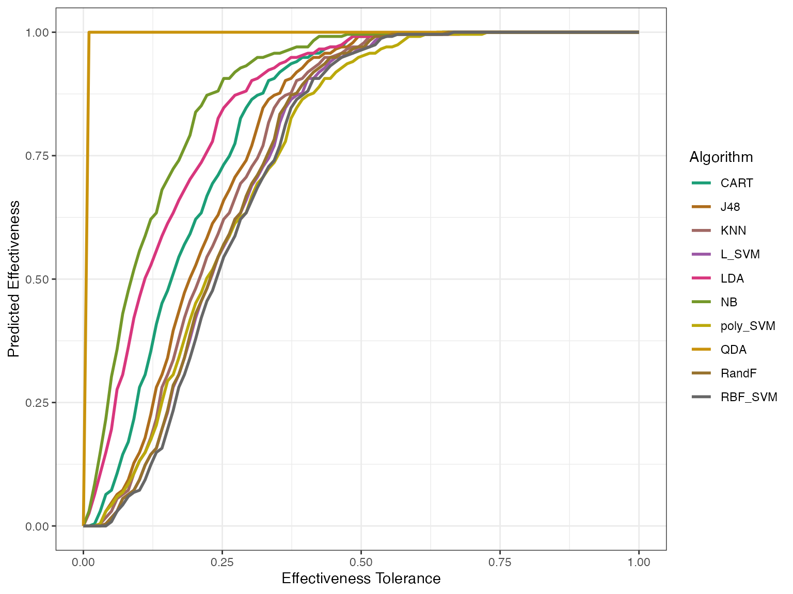

Introduction to airt
airt.RmdThe goal of airt is to evaluate performance of algorithms using Item Response Theory (IRT). You can use airt to evaluate the performance of a group of algorithms on a collection of test instances. The IRT model is fitted using the R package mirt .
Classification Algorithms - Continuous IRT model
This example is on classification algorithms. The data classification has performance data from 10 classification algorithms on 235 datasets. This data is discussed in (Muñoz et al. 2018) and can be found at the test instance library MATILDA (Smith-Miles 2019).
data("classification_cts")
df2 <- classification_cts
max_item <- max(df2)
min_item <- 0
max.item <- rep(max_item, dim(df2)[2])
min.item <- rep(min_item, dim(df2)[2])
df2 <- as.data.frame(df2)
modout <- cirtmodel(df2, max.item, min.item)
paras <- modout$model$param
gdf <- prepare_for_plots_crm(modout$model)
ggplot(gdf, aes(theta, z)) + geom_raster(aes(fill=pdf)) + xlab("theta") + facet_wrap(~Algorithm, nrow=2) + coord_fixed(ratio=1) + theme_bw() + scale_fill_viridis_c(option = "plasma") The figure above shows the probability density of the fitted IRT model over Theta and z values. The y axis denotes the normalized performance values. The high density regions are showed by the lighter coloured parts.
Classification Algorithms -Latent Trait Analysis
We can also look at the datasets and their easiness with respect to the algorithms. This is called the latent trait analysis.
obj <- latent_trait_analysis(df2,modout$model$param,min.item,max.item, epsilon = 0 )
#> Joining, by = "group"
#> Joining, by = "group"
dfl <- obj$longdf
g1 <- ggplot(dfl, aes(Latent_Trait, value)) + geom_point(aes(color=Algorithm)) + xlab("Latent Trait (Dataset Easiness)") + ylab("Performance") + theme_bw()
g1
The figure above shows the performance of the 10 algorithms on different datasets ordered by dataset easiness. Or, we can split it by algorithm.
g3 <- ggplot(dfl, aes(Latent_Trait, value)) + geom_point(aes(color=Algorithm)) + xlab("Latent Trait (Dataset Easiness)") + facet_wrap(~Algorithm, nrow=2) + coord_fixed(ratio=6) + ylab("Performance") + theme_bw()
g3
### Curve fitting - smoothing splines - latent trait
g2 <- ggplot(dfl, aes(Latent_Trait, value)) + geom_smooth(aes(color=Algorithm), se = FALSE, method = "gam", formula = y ~s(x, bs="cs"))+ xlab("Latent Trait (Dataset Easiness)") + ylab("Performance") + theme_bw() +theme(legend.position="bottom", legend.box = "horizontal")
# g2Next, we fit smoothing-splines to the performance data by algorithm. The figure above shows these smoothing splines for each algorithm as a function of the dataset easiness. From this figure, we can get the best algorithm for a given dataset easiness. This gives us the proportion of the latent trait spectrum occupied by each algorithm. We call this the latent trait occupancy.
latent <- obj$strengths
latent$proportions
#> # A tibble: 5 x 4
#> group Proportion algorithm colour
#> <dbl> <dbl> <chr> <chr>
#> 1 2 0.472 J48 #D89000
#> 2 10 0.340 RBF_SVM #FF62BC
#> 3 4 0.119 L_SVM #39B600
#> 4 3 0.0553 KNN #A3A500
#> 5 7 0.0128 poly_SVM #00B0F6
num_algos <- length(unique(dfl$Algorithm))
colrs <- scales::hue_pal()(num_algos)
latenttr <- obj$strengths$multilatent
dfl2 <- tidyr::pivot_longer(latenttr, cols = 2:dim(latenttr)[2])
colnames(dfl2)[2] <- "Algorithm"
dfl2 <- dfl2[dfl2$value!=0, ]
new_vals <- seq(1, length(unique(dfl2$value)), by = 1)
dfl2$value <- new_vals[as.factor(dfl2$value )]
dfl2$value <- dfl2$value*0.1
colrs2 <- colrs[which(sort(unique(dfl$Algorithm)) %in% unique(dfl2$Algorithm))]
g6 <- ggplot(dfl2, aes(x = latenttrait, y =value, fill = Algorithm)) + geom_tile() + theme(axis.title.y=element_blank(), axis.text.y=element_blank(),axis.ticks.y=element_blank()) + scale_fill_manual(values = colrs2) + ggtitle("Algorithm Strengths") + coord_fixed(ratio=1)
latenttr2 <- obj$weakness$multilatent
dfl3 <- tidyr::pivot_longer(latenttr2, cols = 2:dim(latenttr)[2])
colnames(dfl3)[2] <- "Algorithm"
dfl3 <- dfl3[dfl3$value!=0, ]
new_vals <- seq(1, length(unique(dfl3$value)), by = 1)
dfl3$value <- new_vals[as.factor(dfl3$value )]
dfl3$value <- dfl3$value*0.1
colrs2 <- colrs[which(sort(unique(dfl$Algorithm)) %in% unique(dfl3$Algorithm))]
g7 <- ggplot(dfl3, aes(x = latenttrait, y =value, fill = Algorithm)) + geom_tile() + theme(axis.title.y=element_blank(), axis.text.y=element_blank(),axis.ticks.y=element_blank()) + scale_fill_manual(values = colrs2) + ggtitle("Algorithm Weaknesses") + coord_fixed(ratio=0.1)
g2
grid.arrange(g6, g7)
We see latent trait occupancy in the graph above. The 5 algorithms J48, KNN L_SVM, poly_SVM and RBF_SVM occupy parts of the latent trait spectrum. That is, for some dataset easiness values, these algorithms display superiority.
Classification Algorithms - Polytomous IRT model
We have binned the data so that we can fit a polytomous IRT model to it. The lowest performance measurement is P1 and the highest is P5, with the others in between. The latent scores \(\theta\) represent the easiness of the datasets. Let’s fit an IRT model to this data and look at the algorithm trace lines.
data("classification_poly")
modout <- pirtmodel(classification_poly, vpara=FALSE)
gdf <- prepare_for_plots_poly(modout$model)
ggplot(gdf, aes(Theta, value)) + geom_line(aes(color=Level)) + facet_wrap(.~Algorithm) + ylab("Probability") + ggtitle("Classification Algorithm Trace Lines") + theme_bw()The trace lines give the probability of getting performance levels from P1 to P5, for different values of dataset easiness denoted by theta. The probability of getting P5 is higher for an easy dataset, while it is lower for a difficult dataset. We see that some algorithms have only levels P3 to P5, while some have all performance levels. Also, some algorithms like QDA have gentler transitions between the most likely performance levels, and some like RBF_SVM have very sharp transitions.
IRT Model Goodness
But how good is our IRT model? Can we trust the algorithm trace lines? To check how good the IRT model is we compute the goodness of model in this way. The IRT model has computed latent scores for all the datasets. These scores tell us how easy or hard the datasets are. A high value of theta indicates an easy dataset. For each algorithm using the latent scores and the algorithm trace lines, we can predict the performance of the IRT model for each dataset. This is not 100% correct. Then we can compare the predicted performance with the actual performance values. That is what we do here. Let’s look at the model goodness curves.
# Model Goodness and Algorithm effectiveness
good <- model_goodness_poly(modout$model)
good_curves <- as.data.frame(good$curves)
print(good_curves)
#> x NB LDA QDA CART J48 KNN L_SVM
#> 1 0.00 0.7446809 0.7914894 0.4468085 0.9361702 0.9361702 0.9276596 0.9191489
#> 2 0.25 0.9829787 0.8893617 0.6936170 0.9957447 1.0000000 0.9957447 0.9872340
#> 3 0.50 0.9914894 0.9446809 0.8723404 0.9957447 1.0000000 1.0000000 0.9914894
#> 4 0.75 0.9914894 0.9659574 0.8978723 0.9957447 1.0000000 1.0000000 0.9957447
#> 5 1.00 0.9957447 1.0000000 0.9957447 0.9957447 1.0000000 1.0000000 0.9957447
#> poly_SVM RBF_SVM RandF
#> 1 0.8553191 0.9787234 0.7446809
#> 2 0.9787234 0.9957447 0.9063830
#> 3 0.9829787 0.9957447 0.9531915
#> 4 0.9829787 0.9957447 0.9702128
#> 5 0.9829787 0.9957447 1.0000000
good_df <- good_curves %>% pivot_longer(cols=2:dim(good_curves)[2], names_to=c("Algorithm"))
ggplot(good_df, aes(x,value)) + geom_point() + geom_line(aes(color = Algorithm), size=1) + xlab("Goodness Tolerance") + ylab("Model Goodness Curve") + theme_bw()The x axis is the goodness tolerance. That is, the values at x=0 tell you the percentage of actual = predicted for each algorithm. We see that for QDA only 45% of actual performance values equals the IRT predicted performance values, while for CART more than 95% of the actual performance values equals the IRT predicted performance values.
If we make the definition of goodness slightly broader and include the proportion of predicted deviating from the actual by 1, then for QDA nearly 70% of the datasets are within that margin and for CART it is this proportion is nearly 100%. In this manner we relax the tolerance. The curves list out these coordinates for each algorithm for each goodness tolerance level x. The area under the curve is an indication of how accurate the IRT model is on a given algorithm.
good$goodnessAUC
#> [,1]
#> NB 0.9590426
#> LDA 0.9239362
#> QDA 0.7962766
#> CART 0.9882979
#> J48 0.9920213
#> KNN 0.9898936
#> L_SVM 0.9829787
#> poly_SVM 0.9659574
#> RBF_SVM 0.9936170
#> RandF 0.9255319We see that the goodness of the IRT model is quite high for most algorithms apart from QDA. For QDA it is 0.79, which is low compared to the rest.
Algorithm Effectiveness
Suppose algorithm A gives good performance values and algorithm B gives poor performance values for most of the test instances. Then, we can say that algorithm A is more effective than algorithm B. Basically, this is our notion of effectiveness. We compute the proportion of datasets that achieve the highest performance value, P5 in this example. Then we compute the proportion of datasets that achieve the levels P5 and P4. Next the proportion of datasets that obtains P5, P4 or P3. We do this computation for actual performance values and IRT model predicted performance values. These two sets of effectiveness curves are shown in the 2 graphs below.
eff <- effectiveness_poly(modout$model)
eff_curves <- as.data.frame(eff$actcurves)
eff_df1 <- eff_curves %>% pivot_longer(cols=2:dim(eff_curves)[2], names_to=c("Algorithm"))
eff_curves <- as.data.frame(eff$prdcurves)
eff_df2 <- eff_curves %>% pivot_longer(cols=2:dim(eff_curves)[2], names_to=c("Algorithm"))
eff_df <- rbind.data.frame(eff_df1, eff_df2)
eff_df <- cbind.data.frame( eff_df, c( rep( "Actual Effectiveness", dim(eff_df1)[1]), rep("Predicted Effectiveness", dim(eff_df2)[1]) ) )
colnames(eff_df)[4] <- "Act_Or_Pred"
ggplot(eff_df, aes(x, value)) + geom_point() + geom_line(aes(color = Algorithm), size=1) + facet_wrap(~Act_Or_Pred) + theme_bw()
Similar to the model goodness curves, we can find the area under the actual effectiveness curve and the predicted effectiveness curve. This will show how much the IRT predicted deviates from the actual, and also which algorithms are more effective than others. We show this in the graph below.
df_eff <- cbind.data.frame(as.data.frame(eff$effectivenessAUC), rownames(eff$effectivenessAUC) )
colnames(df_eff)[3] <- "Algorithm"
ggplot(df_eff, aes(Actual, Predicted)) + geom_jitter(aes(color=Algorithm), size=3) + geom_abline(aes(intercept=0,slope=1), linetype="dotted") + xlim(c(0,1)) + ylim(c(0,1)) + xlab("Area under Actual Effectiveness Curve (AUAEC)") + ylab("Area under Predicted Effectiveness Curve (AUPEC)") + theme_bw()
measures <- cbind.data.frame(good$goodnessAUC, eff$effectivenessAUC)
print(measures)
#> good$goodnessAUC Actual Predicted
#> NB 0.9590426 0.9244681 0.9553191
#> LDA 0.9239362 0.8973404 0.9420213
#> QDA 0.7962766 0.7202128 0.8468085
#> CART 0.9882979 0.9521277 0.9585106
#> J48 0.9920213 0.9579787 0.9606383
#> KNN 0.9898936 0.9563830 0.9579787
#> L_SVM 0.9829787 0.9430851 0.9547872
#> poly_SVM 0.9659574 0.9015957 0.9319149
#> RBF_SVM 0.9936170 0.9494681 0.9553191
#> RandF 0.9255319 0.9148936 0.9702128The table above shows the area under the model goodness curve and the areas under the actual and predicted effectiveness curves.
Two more measures
We define two more measures for algorithms: stability and anomalous nature. Algoroithms are stable if the transitions between the most likely performance levels are smoother. This can be seen from the algorithm trace lines. For example QDA and LDA have smoother transitions compared to RBF_SVM. This is related to the discrimination parameter in an IRT. We define stability as K - |discrimination|, where K is the highest absolute discrimination value.
In addition, some algorithms are anomalous. That is they perform well on datasets where the other algorithms perform poorly. We say an algorithm is anomalous is the IRT discrimination parameter is negative. In this example non of the algorithms are anomalous.
stab <- modout$stability
anomalous <- modout$anomalous
cbind.data.frame(stab, anomalous)
#> stab anomalous
#> NB 0.52833936 0
#> LDA 0.92182505 0
#> QDA 2.85482903 0
#> CART 0.15932110 0
#> J48 0.15898528 0
#> KNN 0.14889309 0
#> L_SVM 0.16084800 0
#> poly_SVM 0.28802969 0
#> RBF_SVM 0.07019147 0
#> RandF 0.84867217 0More examples of algorithm evaluation using airt are discussed in our paper (Kandanaarachchi and Smith-Miles 2020).
References
Kandanaarachchi, Sevvandi, and Kate Smith-Miles. 2020. “Comprehensive Algorithm Portfolio Evaluation Using Item Response Theory.” Working Paper. RMIT University. https://www.researchgate.net/publication/341150504_Comprehensive_Algorithm_Portfolio_Evaluation_using_Item_Response_Theory.
Muñoz, Mario A, Laura Villanova, Davaatseren Baatar, and Kate Smith-Miles. 2018. “Instance Spaces for Machine Learning Classification.” Machine Learning 107 (1): 109–47.
Smith-Miles, Kate. 2019. MATILDA: Melbourne Algorithm Test Instance Library with Data Analytics. https://katesmithmiles.wixsite.com/home/matilda.